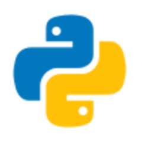

Mis mejores habilidades

Me llamo Ángel Herrera Lozano, tengo 21 años y soy estudiante de ingenieria informatica en la universidad politecnica de Valencia. Cuento con un grados superior de desarrollo de aplicaciones multiplataforma, con un bachillerato tecnologico y nivel b2 de Ingles.
Cursé tanto la enseñanza secundaria obligatoria como el bachillerato tecnológico en el IES Berenguer Dalmau, situado en Catarroja. Esta institución no solo me proporcionó una educación de calidad, sino que también contribuyó significativamente a mi desarrollo académico y personal. Durante estos años, tuve la oportunidad de explorar mis intereses en el ámbito tecnológico, adquiriendo conocimientos sólidos y habilidades prácticas que sientan las bases para mi futura carrera profesional.
A la edad de 13 años, obtuve el certificado de nivel B1 en inglés, y tres años más tarde, a los 16 años, logré obtener el nivel B2 en el mismo idioma. Estos logros tempranos en mi dominio del inglés reflejan mi dedicación y esfuerzo por mejorar mis habilidades lingüísticas desde una edad temprana. El dominio del inglés en estos niveles de competencia ha sido fundamental en mi desarrollo académico y personal, abriéndome puertas a oportunidades educativas y profesionales tanto a nivel nacional como internacional.
En la actualidad, me encuentro inmerso en el primer curso de mi carrera universitaria en Ingeniería Informática en la Universidad Politécnica de Valencia. Este nuevo capítulo académico representa un paso importante en mi formación profesional, donde estoy adquiriendo conocimientos especializados y habilidades técnicas fundamentales para enfrentar los desafíos del mundo digital en constante evolución
Geliculon es una aplicacion para android e ios acerca de peliculas y series. Desarrollada en Kotlin
Enlace GithubUn reproductor de musica hecho en python que te permite poder parar rebobinar y saltar canciones.
Enlace Github